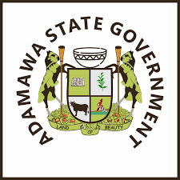

| state |
capital |
slogan |
logo |
| Abia |
Umaiya |
God's Own state |
|
| Adamawa |
Yola |
Land of Beauty |
 |
| Akwa Ibom |
Uyo |
Land of Promise |
 |
| Anambra |
Awka |
Light of the Nation |
|
| Bauchi |
Bauchi |
Pearl of Tourism |
|
| Bayelsa |
Yenagoa |
Glory of All Land |
|
| Benue |
Makurdi |
Food Basket of the Nation |
|
| Borno |
Maiduguri |
Home of Peace |
|
| Cross river |
Calabar |
The People's Pradaise |
|
| Delta |
Asaba |
The Big Heart |
|
| Ebonyi |
Abakaliki |
Salt of The Nation |
|
| Edo |
Benin city |
Heartbeat of The Nation |
|
| Ekiti |
Ado-ekiti |
Land of Honour and Integrity |
 |
| Enugu |
Enugu |
Coal City state |
|
| FCT |
Abuja |
Federal Capital City |
|
| Gombe |
Gombe |
Jewel of the Savannah |
|
| Imo |
Owerri |
Eastern Heartland |
|
| Jigawa |
Dutse |
The New World |
|
| Kaduna |
Kaduna |
The centre of Learning |
|
| Kano |
Kano |
Centre of Commerce |
|
| Katsina |
Katsina |
Home of Hospital |
|
| Kebbi |
Birnin kebbi |
Land of Equity |
|
| Kogi |
Lokoja |
The Confluence State |
|
| Kwara |
Ilorin |
State off Harmony |
|
| Lagos |
Ikeja |
Centre of Exellence |
|
| Nasarawa |
Lafia |
Home of solid Mineral |
|
| Niger |
Minna |
The power State |
|
| Ogun |
Abeokuta |
Gateway State |
|
|
| Ondo |
Akure |
SunshineState |
|
| Osun |
Osogbo |
Land of vitue |
|
| Oyo> |
Ibadan |
Pace Setter State |
|
| Plateau |
Jos |
Home of Peace and Tourism |
|
| River |
port Harcourt |
Treasure Base of the Nation |
|
| Sokoto |
Sokoto |
Seat of the Caliphate |
|
| Taraba |
jalingo |
Nature's Gift to the Nation |
|
| Yobe |
Damaturu |
Pride of the Sahel |
|
| Zamfara |
Gusau |
Farming is Our Pride |
|